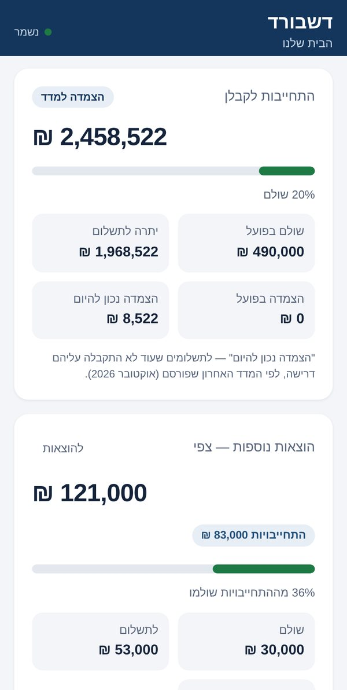
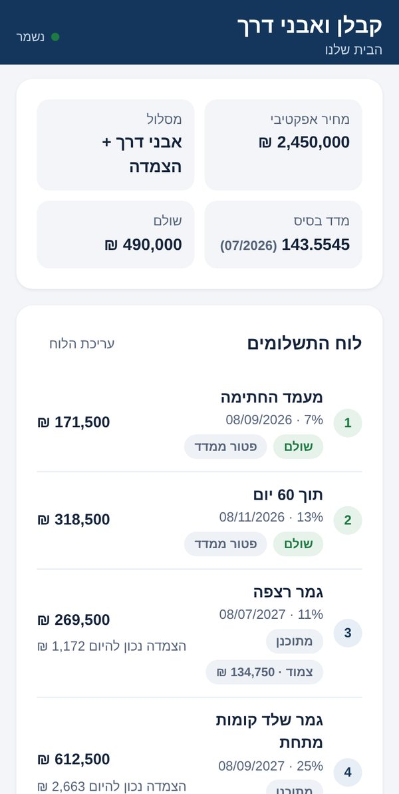
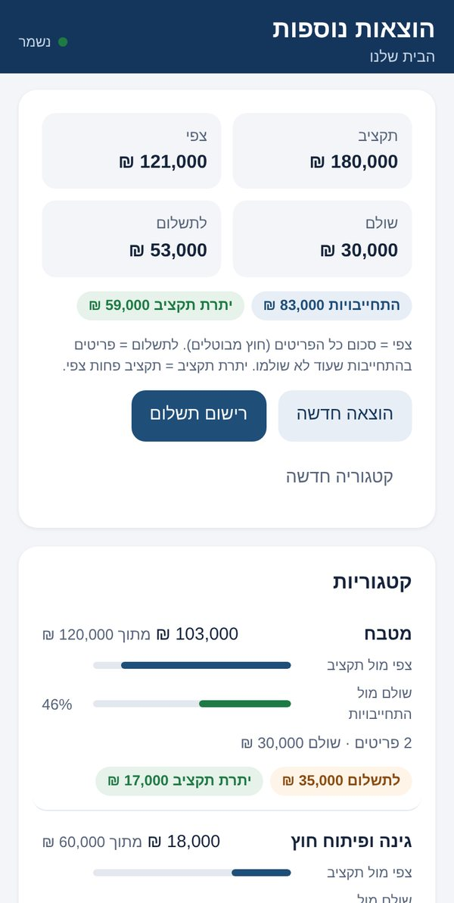
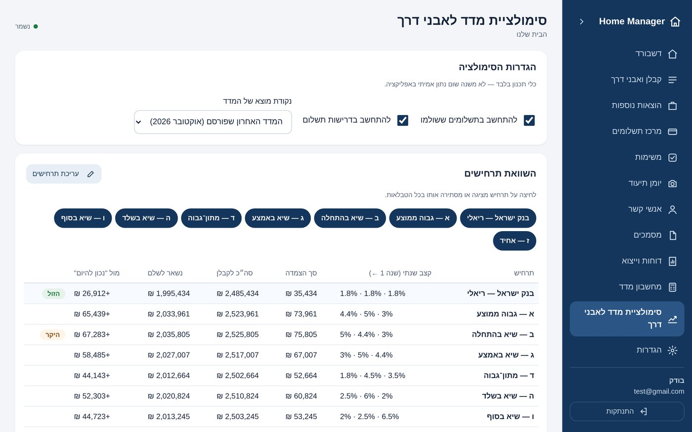

מה אפשר לעשות
- לוח תשלומים לקבלןאבני דרך לפי החוזה, דרישות תשלום, מה שולם ומה נשאר. תומך במסלול צמוד מדד, תוספת קבועה ו-20/80.
- חישוב הצמדהמדד תשומות הבנייה למגורים מתעדכן אוטומטית מהלמ״ס, כולל חלק פטור, אחוז צמוד ורצפת מדד בסיס.
- סימולציית מדדכמה יעלו אבני הדרך הבאות בכמה תרחישי אינפלציה, כדי לתכנן מראש כמה כסף להכין.
- הוצאות נוספותקטגוריות ותקציב: מטבח, ריהוט, חשמל, משפטיות ועוד. סכום וסטטוס לכל פריט, ומה עוד נשאר לשלם.
- מסמכים ותיעודחוזה, קבלות ותמונות מהאתר נשמרים בתיקייה מסודרת בדרייב, מקושרים לתשלום או לאבן הדרך.
- דוחות וייצואסיכום פרויקט, לוח קבלן, תזרים צפוי וכל התשלומים — לאקסל או ל-PDF.
ככה זה נראה




איך מתחילים
- נכנסים עם חשבון Google. במסך של Google מסמנים את התיבה של Google Drive ולוחצים "המשך".
- האפליקציה יוצרת בדרייב שלך תיקייה בשם "פרויקט הבית שלי", ובה גיליון נתונים ותיקיות למסמכים.
- אשף קצר: פרטי הפרויקט, תאריך חתימה, מחיר, מסלול החוזה, מדד בסיס ולוח התשלומים.
- מתקינים למסך הבית — ונפתחת במסך מלא, כמו אפליקציה.
איך זה עובד, ולמה זה פרטי
כל מה שמזינים נשמר ב-Google Drive שלך. אין שרת, ואין לנו גישה לנתונים שלך. האפליקציה מבקשת את ההרשאה המצומצמת ביותר של Google Drive (drive.file): היא רואה רק את הקבצים שהיא עצמה יצרה או שהעלית דרכה, ולא את שאר הקבצים שלך. אפשר לבטל את ההרשאה בכל רגע.
שאלות נפוצות
זה עולה כסף?
לא. האפליקציה חינמית, בלי פרסומות ובלי מנוי.
מי יכול לראות את הנתונים שלי?
רק אתה. הנתונים נמצאים ב-Google Drive שלך. אם תשתף את התיקייה עם מישהו, הוא יוכל לראות את הקבצים בדרייב, כמו כל קובץ אחר שלך.
זה עובד באייפון?
כן. פותחים את האתר ב-Safari, לוחצים על כפתור השיתוף ובוחרים "הוסף למסך הבית". באנדרואיד ובמחשב יש כפתור "התקנת האפליקציה" בתוך האפליקציה.
מאיפה מגיע המדד?
מדד תשומות הבנייה למגורים נלקח מהלשכה המרכזית לסטטיסטיקה ומתעדכן אוטומטית בערב שבו הוא מתפרסם (בדרך כלל ב-15 לחודש). האפליקציה מתרגמת אותו לבסיס המדד שבחוזה שלך.
החוזה שלי בנוי אחרת. זה יתאים?
יש שלושה מסלולים: אבני דרך עם הצמדה, אבני דרך עם תוספת קבועה, ותשלום מוקדם/במסירה (כמו 20/80). את לוח התשלומים, החלק הפטור והאחוז הצמוד אפשר לערוך.
מה קורה אם אתנתק או אחליף מכשיר?
שום דבר לא הולך לאיבוד. נכנסים שוב עם אותו חשבון Google — מכל מכשיר — והכול שם.
אפשר לסמוך על החישובים?
החישובים נעשים לפי הכללים שבחוזה ולפי הנתונים שהזנת, והם כלי עזר לתכנון. לפני כל תשלום כדאי לבדוק את הסכום מול דרישת התשלום והחוזה. תנאי שימוש.
About
Home Manager Payments is a free, Hebrew web app that helps home buyers in Israel manage payments to their building contractor, index linkage (CBS construction input index), additional expenses, documents and a project journal. The app has no backend server: all data is stored in a folder and a spreadsheet that the app creates in the user's own Google Drive, using the limited drive.file scope (access only to files created or opened with the app). See the Privacy Policy and Terms.